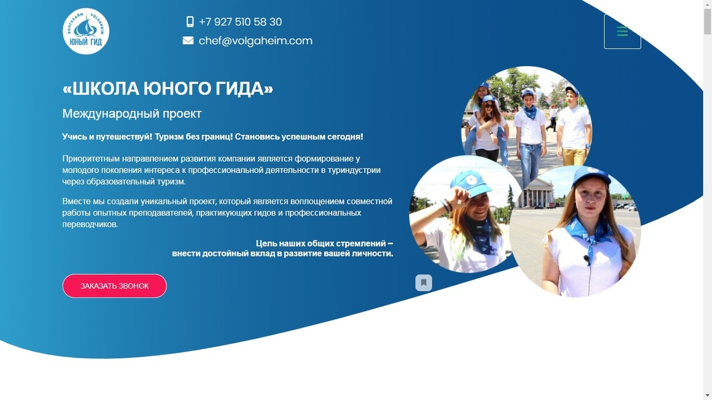

Страница с информацией обо мне
Обо мне
Меня зовут Николай, мне 26 лет. Живу в Москве в районе Кузьминки. Выпускник Института мировых цивилизаций по специализации "Управление персоналом". Люблю компьютерную технику и многое,что с ней связано. Часто помогаю друзьям подобрать комплектующие к компьютеру и после помочь собрать. Английским владею на среднем уровне. Люблю видеоигры и чтение. Несколько раз в неделю занимаюсь фитнесом. Занимаюсь коллекционированием комиксов и манги. Люблю слушать музыку.
Разработкой сайтов начал интересоваться недавно (в апреле 2020), проходил интерактивыне тренажёры и прошёл несколько курсов по вёрстке. Хорошо знаю HTML и CSS, имею опыт адаптивной вёрстки с использованием БЭМ, LESS, GIT, GULP, NPM. Знаком с основами JavaScript и JQuery. Знаком с Tilda и WorldpPress. Хочу учиться,работать и развиваться в сфере web-разработки.
Портфолио
Опыт работы
настоящее время
- Разработка сайтов на Тильде.
- Внесение правок на уже существующие сайты.
- Улучшения функционала сайтов на Тильде с помощью html, css и JQuery.
Сентябрь 2022
- Оперативное решение задач поставленных руководством.
- Обработка жалоб поступающих на телефон, помощь в решении проблем.
- Обзвон контрагентов, для решения проблем, описанных в официальных письмах.
- Составление официальных ответов на жалобы от контрагентов поступивших, через внутреннюю
почту.
- Обход мест накопления отходов для учёта и поиска нарушения.
- Составление актов по найденным нарушениям.
- Ведение учёта мест накопления учёта в Excel и на сайте Департамента ЖКХ tsoo.mos.ru.
- Взаимодействие с юридическим отделом и договорным отделом для оперативного решения задач.
Декабрь 2021
- Создание лэндингов в Тильде с помощью функционала конструктора.
- Доработка и редактирование существующих страниц.
- Создание кастомных блоков с помощью html и css.
- Расширение функционала сайта с помощью скриптов на JQuery.
- Установка событий для сервисов аналитики(Yandex, VK, Facebook, Amplitude).
Август 2021
- Разработка сайтов с использованием bootstrap.
- Создание новых страниц на сайте с использованием Wordpress, доработка уже готовых страниц.
- Создание скриптов на ванильном JavaScript или с использованием JQuery
Апрель 2020
- Прямые и не прямые продажи
- Обзвон клиентов интернет магазина, подтверждение заказов
- Консультации по продукции магазина
- Модульная замена комплектующих и не сложный ремонт компьютерной техники
- Диагностика неисправностей компьютерной техники
- Установка OS и различного ПО
- Подбор и собеседование новых сотрудников.
- Построение маршрутов,отправка курьеров и дистанционное курирование
- Распределение обязанностей между младшим персоналом
- Финансовый учет(ведение кассы, приём и передача денег клиентам и курьерам).
- Учёт и инвентаризация компьютерной техники в наличии.
- Составление Договоров купли-продажи, товарных накладных, счётов, счетов-фактур.
- Участие в закупках необходимого оборудования и товаров
- Разрешение конфликтных ситуаций возникающих в ходе торговых отношений.
- Сверка актуальности информации на сайте магазина
- Работа с транспортными компаниями СДЕК, Boxberry, DPD, Почта России
Примеры работ
Успешно прошёл курсы по вёрстке web-страниц и защитил учебные проекты. Имеется опыт коммерческой разработки. Вот примеры последних моих проектов:
Стоматологическиая клиника "Адамант". По заданию было необходимо перенести все основные страницы сайта с Drupal на Тильду с изменением дизайна некоторых частей сайта.
Автомастерская "Vag". Сайт автомастерской реализован на русском и на иврите.
Фан сайт по мобильной игре Fullmetal Alchemist. Сайт с руководствовами по мобильной игре. Создавалася в первую очередь для собственного удобства, поскольку адекватных сайтов нет ни на английском, ни на русском, а только на японском.
Техномарт это статичная страница магазина техники. На данном сайте реализованы две страниц - главная и странциа каталога. Так же есть страницы модальных окон, которые в обычной ситуации открываются с помощью JavaScript, но если по какой-то причине JavaScript не сработает, то пользователя перенесёт на отдельную страничку с модальным окном.
Cat Energy это магазин по продаже здорового питания для котов. У данного сайта имеется 3 адаптивные версии - для мобильных устройств с шириной от 320px, для планшетов с широной от 768px и десктопная версия с шириной от 1440px. Сайт хорошо выглядит,не только на этих разрешениях,но и на промежуточных значениях. Навигация по сайту на мобльном разрешении открывается и закрывается при нажатии на кнопки, по умолчнаию оно скрыто. Для ситуация когда JavaScript может не работать, меню по умолчанию открыто,а когда JavaScript загружаетсяЮ оно скрывается и работает в штатном режиме.

Этот сайт представляет из себя небольшую презентацию для планшетов с шириной экрана 1024px. На первой страничке сайта реализована простенькая анимация пульсации. При перелистывании слайдов вниз, меняется индикация справа. Последний слайд реализован в виде слайдера.
Kekstagram представляет из себя небольшую социальную сеть. На данном сайте можно просматривать изображения с главной страницы, сортировать их по количеству комментариев или отсортировать 10 случайных. Изображения, комментарии и прочая информация, берутся с сервера. Каждую картинку можно посмотреть и почитать комментарии. По центру страницы есть кнопка для загрузки собственного изображения. К изображению можно применять фильтры и менять масштаб. Так же к загружаемому изображению можно оставить описание и хэштеги, которые проходят валидацию. Изображение так же отправляется на сервер.

Сказочный лес это презентационная страница района от застройшика. У данного сайта имеются брейкпоинты нас ледующих разрешениях : 375px, 768px, 1152px, 1440px и 1920 px. На мобильнйо и планшетной версии выпадающее меню сделано с помощью JavaScript
Школа юного гида это презентационная страница школы волонтёров. Как такового макета у страницы не было, была только пдф презентацию,которую было необходимо было адаптировать для отображения на сайте. Страница сделана с использованием Bootstrap и анимаций со слайдерами из этой библиотеки. Так же у страницы имеются мобильная и планшетная версия

Это одна из страниц интернет магазина. Необходимо было сделать страницу без макета и "натянуть" её на WordPress. Так же у старницы имеются мобильная и планшетная версия